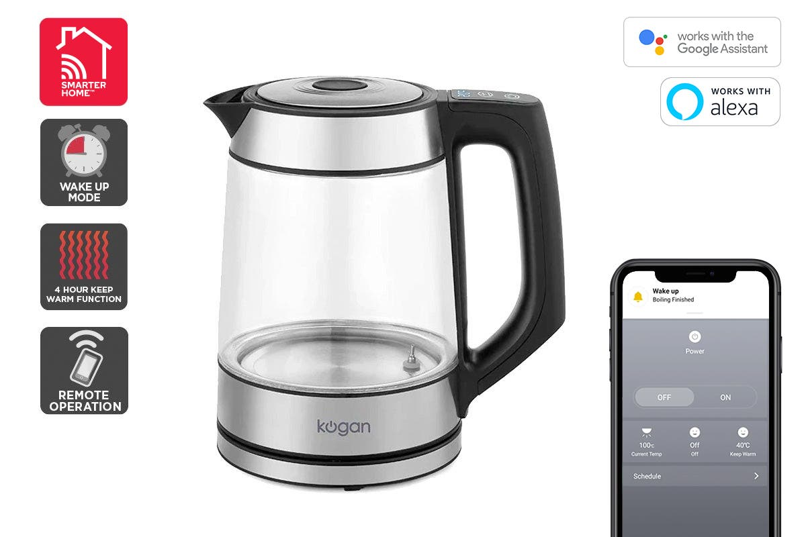

What role does The Internet of Things play around the house?
The Internet of Things is already seen in many things such as smart phones, smart watches, and smart fridges. This can increase how convenient many daily activities are. Smart phones can give users a ball-park range of how many hours they sleep and how much physical activity they are getting. This can allow precursors of health problems to be more easily discovered. Smart fridges can reduce waste by allowing users to see what they have in the fridge, reducing waste from over buying. This is especially important as an average NSW household wastes $3’800 worth of food a year. Smart technology such as home security systems allow users to ensure their property is safe, even if they are working away from home.
Smart Cities
There is a growth of Smart Cities. These are cities that plan on using technology and data to improve the commercial output of a city, increase the quality of life, and ensure sustainability of the environment. This is done using a multitude of sensors, consumer participation, mobile technology, and creating a platform that can combine not just the new data sources, but pre-existing data sources such as public transport usage. This can reduce congestion on public transport during peak hours by identifying alternative routes, reduce pollution by identifying if a bin is full to prevent rubbish falling to the ground, and provide visitors with an idea of what shops or areas to visit based on its visitor rating or level of foot traffic.
The City of Sydney and the City of New York have Smart City Strategic Frameworks, these can be read below:
Elderly Independence
Internet of Things is also allowing people to maintain their independence for much longer. Companies like TruSense can install motion sensors into the house of an elderly person. If the sensors detect no movement or a change to a person’s daily routine, a warning can be sent to the family who can contact emergency services or provide a welfare check. This can include an Amazon Dot that can be spoken to if a person has fallen and is out of reach of their phone, and a GPS can be installed in vehicles to locate them if they go missing.
This is an example of an Internet of Things platform being used to receive and process data from other objects. Although many of these technologies are well established, the platform is creating a better way to understand this data and what it may represent about the condition a person is in.
You can find out more on the Trusense website.
Hover on an arrow to see real world examples of The Internet of Things in a "shopping trip" scenario:
When your phone's alarm goes off, a smart kettle could be activated to boil water for you ready for when you are out of bed.

A smart Kettle from Kogan
The lights in your room can be turned on via a mobile app, allowing you to navigate the room.
As live weather and traffic updates are sent to your phone, they could be played audibly on a speaker. This can warn you that a crash has occurred, and you should leave earlier.
While you are at a market, you could use your phone to check what is in your fridge via a camera. This can remind you to pick up milk, but not to get more eggs as you already have some at home.
This is a brief overview of the ways The Internet of Things are involved in an ordinary person's day. There are countless other examples that currently being used or will be available in the future. Smart cities, increased quality of life for the elderly, and a level of daily convenience never seen before. This is why it is important to understand this technology and how it can help you at home and away, today and tomorrow.